Префектура Кагава · Сёдосима · Хитояма
Имбирные сиропы HOMEMAKERS: ферма, где варят имбирь с цитрусами
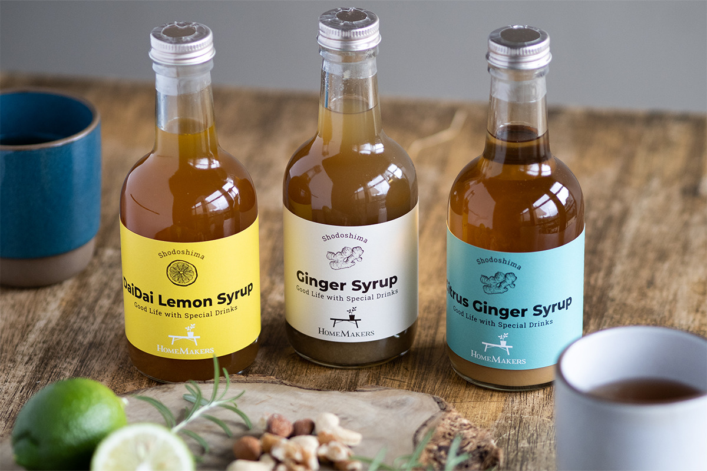
На Сёдосиме, втором по величине острове Внутреннего Японского моря, прячется горная деревня Хитояма. Здесь живёт органическая ферма HOMEMAKERS, и её имбирный сироп пахнет этим островом.
Дом и деревня
Сделать свой дом местом, куда хочется возвращаться
Хитояма стоит почти в центре Сёдосимы: около двухсот домов и шестьсот жителей. «Связи между людьми здесь очень крепкие, и праздников много», рассказывает Хикари Мимура. Деревня бережёт старые обряды: осенью по гребням рисовых полей с факелами проходит шествие муси-окури (проводы вредителей поля), больше трёхсот лет идут представления сельского кабуки Хитоямы, а в храме устраивают праздник огня.
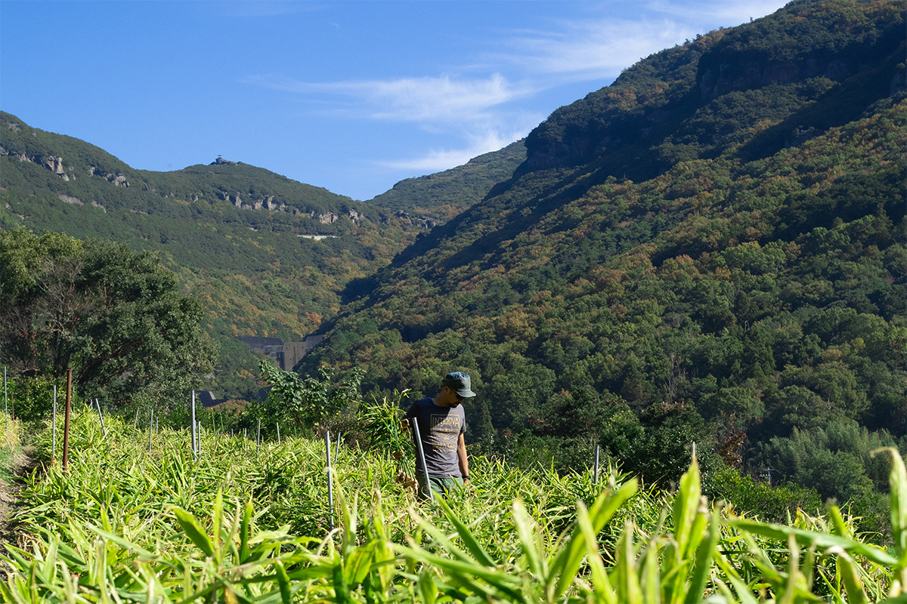
До 2012 года Такуя и Хикари Мимура жили в Нагое. После большого землетрясения 2011 года и проблем со здоровьем в семье они задумались о жизни, где самим можно обеспечить себя едой, и переехали в дом деда Такуи в Хитояме. Старинный крестьянский дом возрастом 140 лет отремонтировали, и в 2013 году появилась ферма HOMEMAKERS. Её философия проста: сделать свой дом удобным и радостным местом, звать туда людей и собираться за одним столом.
Своими руками
Сто видов овощей и ни грамма химии
Круглый год на горных полях Хитоямы растёт больше ста видов овощей, и работа не останавливается: сеять, высаживать, полоть, собирать. Такой «маленький урожай многих сортов» выматывает, зато на столе всегда есть свежий сезонный овощ.
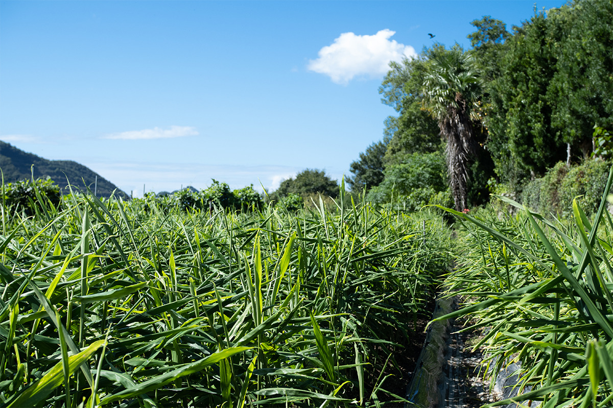
Пестициды здесь не применяют вовсе: на поле можно зайти в любой момент и взять овощ прямо с грядки. Грибы и насекомые остаются жить, и поле держится в состоянии, близком к лесу. Удобрения только органические: рисовые отруби, трава, рыбная и куриная мука. Химических подкормок нет: земля не перегружается и получает лишь то, что необходимо растениям.
Имбирь и цитрусы
Главные вкусы Сёдосимы в одном сиропе
Главный герой сиропов, имбирь, выращен на полях без пестицидов, с постоянной прополкой. К нему идут сок дайдай (горького апельсина) и лимона с Сёдосимы, органические специи вроде корицы и кардамона и тростниковый сахар с острова Танэгасима: получается баланс остроты имбиря, цитрусовой кислинки и глубокого вкуса сахара.
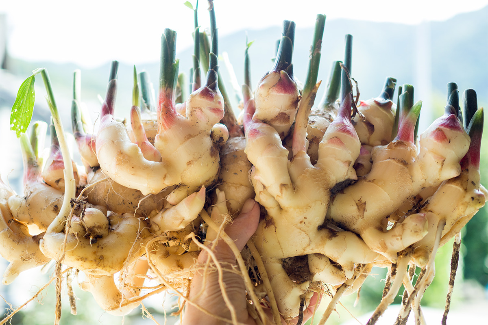
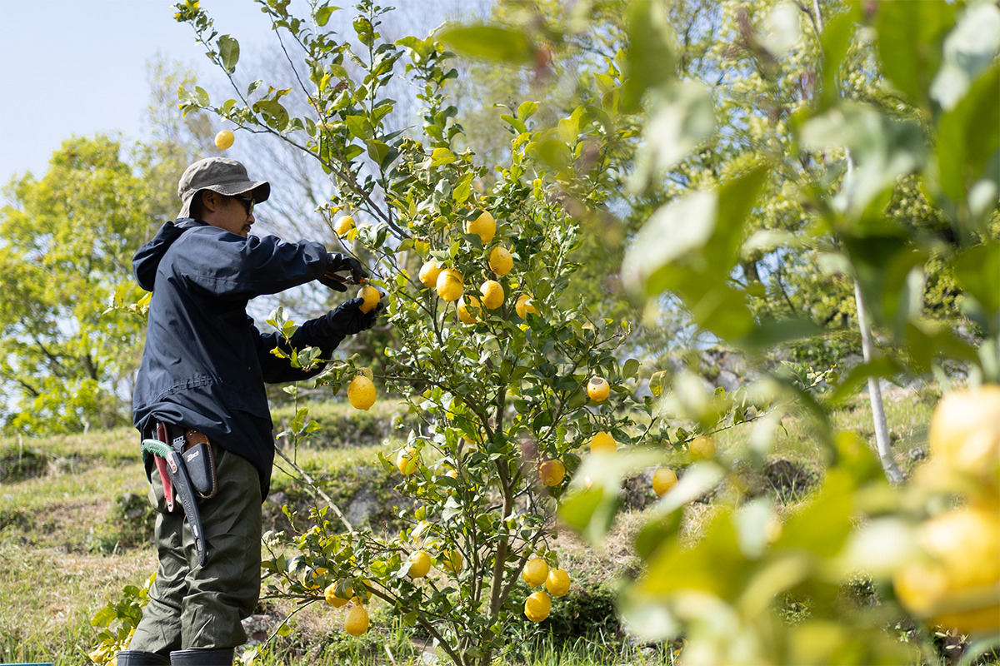
Цитрусовый календарь острова щедрый: с конца августа собирают судати, к октябрю поспевают мандарины, в декабре желтеют лимоны.
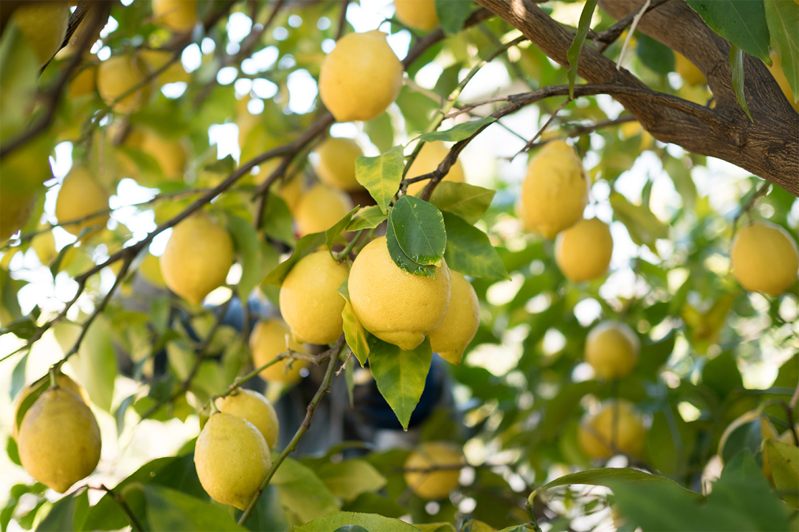
Три сиропа
Простой, цитрусовый и дайдай-лимонный
«Простой имбирный сироп»
Острота имбиря и мягкая сладость тростникового сахара отлично работают в паре: несколько ложек в чай с молоком, кафе-оле или какао, и напиток становится совсем другим.
«Простой имбирный сироп»
- Цена
- 100 мл: 756 иен; 300 мл: 1 652 иены
- Состав
- имбирь, тростниковый сахар, корица, чёрный перец, лавровый лист, кардамон, гвоздика
Имбирный чай с молоком
Достаточно влить сироп в чай с молоком, и получится напиток в духе чая масала. Особенно хорош в кафе-оле с большим количеством молока.
- «Простой имбирный сироп»: 2 столовые ложки
- Чай с молоком: 150 мл
Имбирное соевое (или обычное) молоко
Подогрейте соевое молоко с сиропом, и тёплый сладковатый напиток готов. С коровьим молоком тоже отлично. Лучшее лекарство после долгого дня.
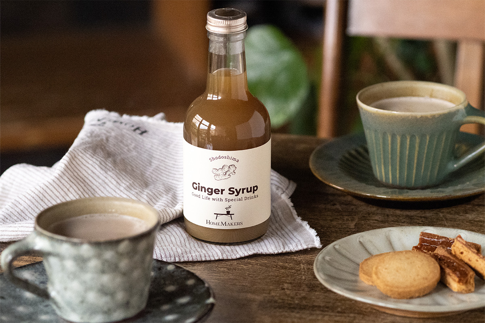
- «Простой имбирный сироп»: 2 столовые ложки (по вкусу)
- Соевое или коровье молоко: 150 мл
«Цитрусово-имбирный сироп»
Универсальный вариант: с газированной водой получается домашний имбирный эль, с кипятком, горячий имбирный напиток. Рекомендуемая пропорция: одна часть сиропа на четыре части воды. Подходит и для коктейлей, и для выпечки.
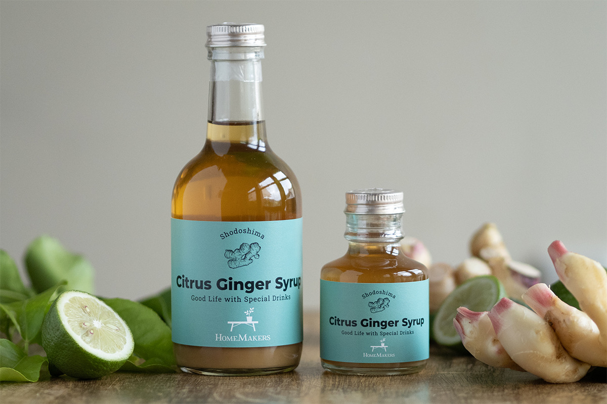
«Цитрусово-имбирный сироп»
- Цена
- 100 мл: 756 иен; 300 мл: 1 652 иены
- Состав
- имбирь, тростниковый сахар, дайдай и лимон с Сёдосимы, корица, чёрный перец, лавровый лист, кардамон, гвоздика
Имбирный эль
- «Цитрусово-имбирный сироп»: 2 столовые ложки
- Газированная вода: 150 мл
- Лёд и ломтики цитрусов: по желанию
Горячий имбирный напиток
Влейте сироп в стакан и залейте кипятком: в холодный сезон это согревает лучше всего.
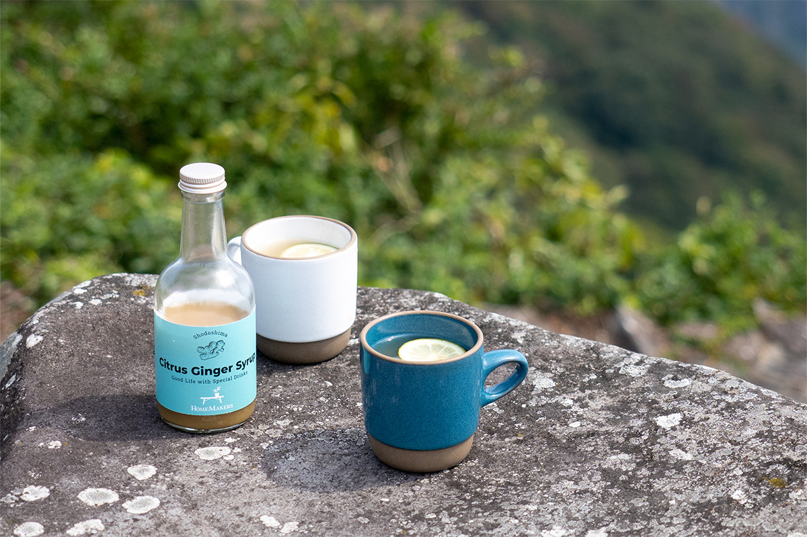
- «Цитрусово-имбирный сироп»: 1–2 столовые ложки
- Кипяток: 150 мл
- Молотая корица: по желанию
«Дайдай-лимонный сироп»
Сахара здесь ровно столько, сколько нужно: кислость цитрусов бьёт в нос, а приторность не остаётся после последнего глотка. Летом разводите газированной водой, зимой, кипятком; в горячий вариант по желанию добавьте мёд.
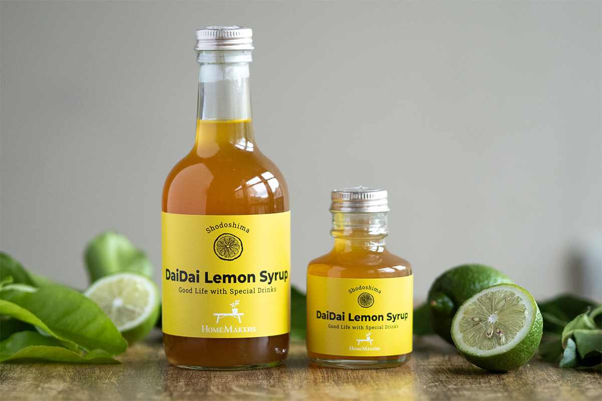
«Дайдай-лимонный сироп»
- Цена
- 100 мл: 648 иен; 300 мл: 1 480 иен
- Состав
- дайдай и лимон с Сёдосимы, лайм, тростниковый сахар, мёд
Дайдай-лимонная содовая
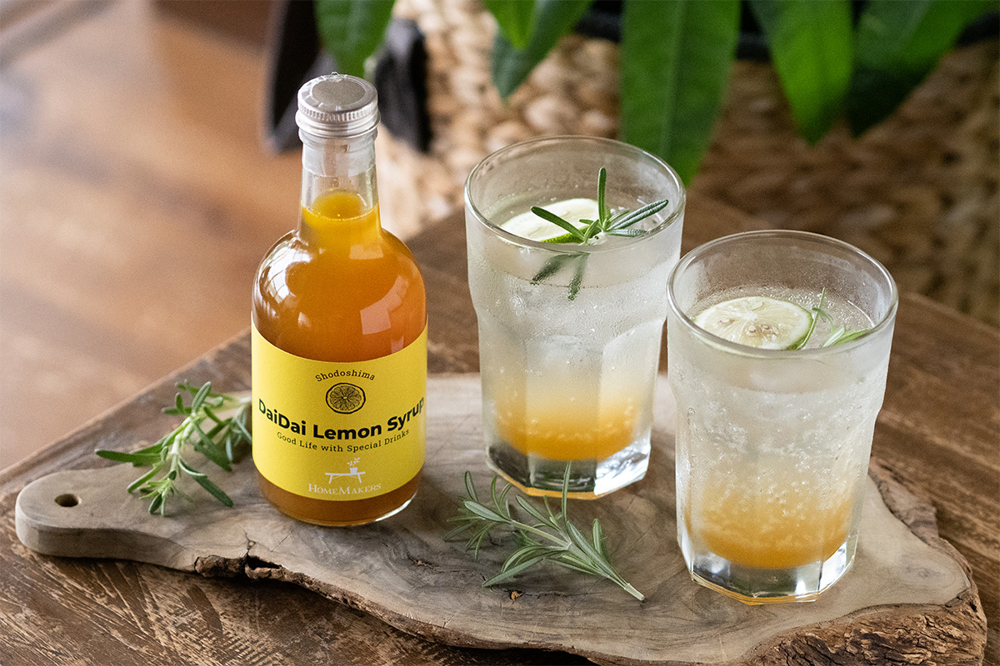
- «Дайдай-лимонный сироп»: 2 столовые ложки
- Газированная вода: 150 мл
- Лёд и ломтики цитрусов: по желанию
Горячий дайдай-лимонный
В горячем виде сиропу не помешает немного сладости, поэтому по желанию добавьте мёд.
- «Дайдай-лимонный сироп»: 1–2 столовые ложки
- Кипяток: 150 мл
- Мёд: по желанию
Попробуйте найти свой способ пить цитрусово-имбирный сироп.
HOMEMAKERS
- Адрес
- префектура Кагава, уезд Сёдзу, посёлок Тоносё, Хитояма-ко, 466-1
- Телефон
- +81 879-62-2727
- Кафе
- 11:00–17:00 (последний заказ в 16:30); дни работы зависят от месяца, уточняйте на сайте
- Сайт
- homemakers.jp